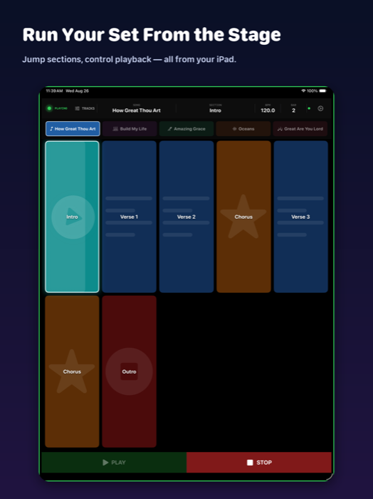
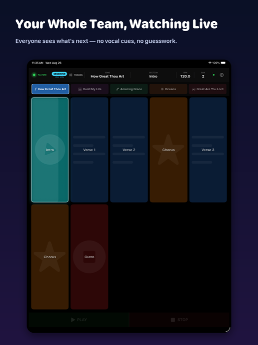
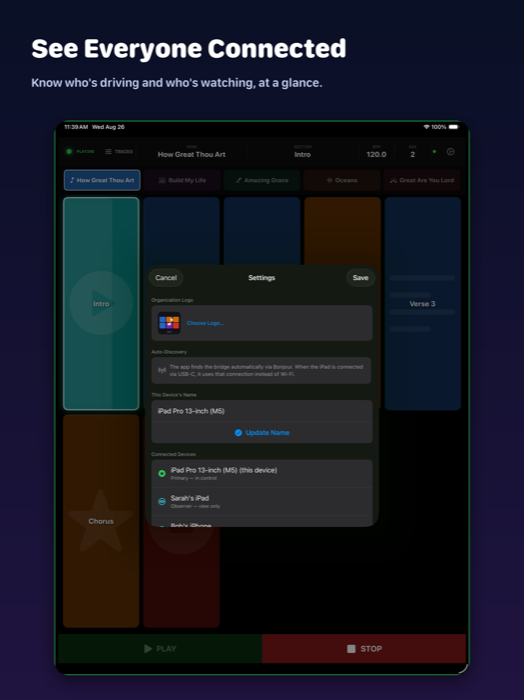
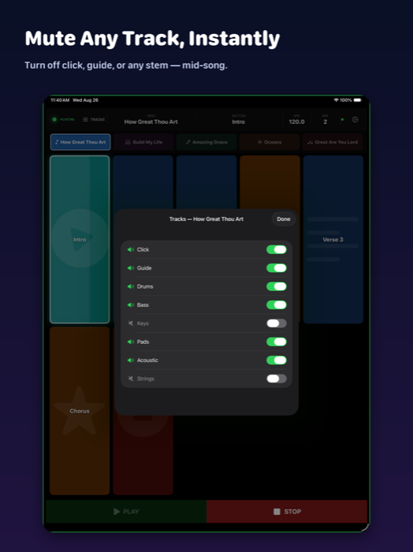

Run your live set
from the stage, not the laptop.
MD Buddy puts every song and section of your Ableton Live set on an iPad. Tap to jump, quantized to the bar, while the rest of the team watches along in real time.
Free companion Bridge app for Mac · iPad & iPhone · Works over Wi‑Fi or USB, no internet required

Built for the Music Director who runs the set live
Whether it's a Sunday service, a rehearsal, or a touring show — MD Buddy keeps you in control without pulling your eyes off the room.
See your whole set, tap to jump
Every song and every section — Intro, Verse, Chorus, Outro — laid out as one screen. Tap a section and it queues the jump for the next bar, so it always lands in time, never mid‑phrase.
- PLAY and STOP always within reach
- Long‑press to reorder your setlist right before you walk on
- Cue points read automatically from your Ableton set

Your whole team, watching live
One iPad drives the set; as many others as you need can connect as observers. Everyone sees the current section and what's coming next — no vocal cues across the stage, no guesswork.
- Unlimited read‑only observers, one primary controller
- No accidental control hand‑off — a deliberate design choice

Know who's driving, at a glance
The Settings panel lists every device on the bridge — who's in control, who's observing — plus auto‑discovery status and a one‑tap way to rename your own device for the room.
- Finds the Bridge automatically over Bonjour
- Prefers a wired USB connection when one's available

Mute any track, instantly
Turn off the click, the guide track, or any stem — mid‑song, without touching the Mac. Built for the moment a part drops out or a track needs to disappear on the fly.
- Per‑track mute toggles for every stem in the set
- Changes apply immediately, synced across the bridge
Three steps, no venue-day fuss
No IP addresses, no accounts, no internet connection required — just your Mac and your iPad on the same network.
Install the free Bridge on your Mac
MD Buddy Bridge connects to Ableton Live via AbletonOSC and reads your set's cue points. Open source, free, available on GitHub.
Name your cue points
Use == Song Name == for song headers and names like Verse 1 or Chorus for sections. That's the entire setup.
Open MD Buddy on your iPad
It finds the Bridge automatically over Bonjour — connect to the same Wi‑Fi, or plug in via USB, and your set appears instantly.
Get MD Buddy
MD Buddy for iPad & iPhone
MD Buddy is in final preparation for App Store review. The iOS app will be free to download. In the meantime, the free MD Buddy Bridge for Mac is available now — install it and it's ready the moment the app goes live.
Support
Need help setting up the Bridge, connecting your iPad, or hit something that doesn't look right? Open an issue on GitHub or email the developer directly — MD Buddy is built and maintained by one person, so you'll hear back from the person who wrote the code.
Privacy Policy
MD Buddy does not collect, store, or transmit any personal data.
- Communicates exclusively with the MD Buddy Bridge on your own local network
- No data ever leaves your local network
- No analytics, advertising SDKs, or third‑party tracking of any kind
- No account or sign‑in required
Last updated November 2026.